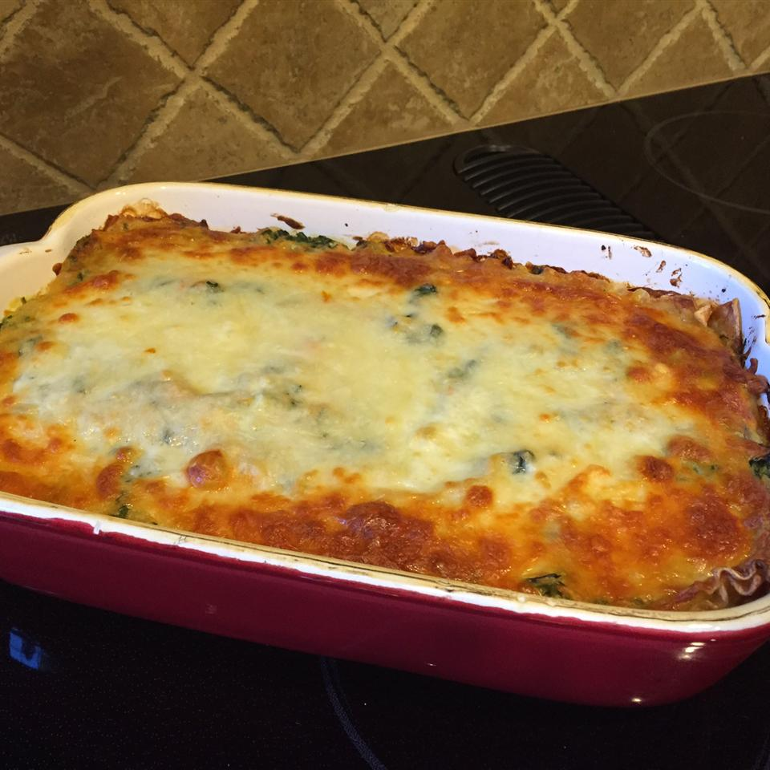

Home
Lasagna

Description
Lasagne originated in Italy during the Middle Ages. The oldest transcribed text about lasagne appears in 1282 in the Memoriali Bolognesi ("Bolognesi Memorials"), in which lasagne was mentioned in a poem transcribed by a Bolognese notary;[4][5] while the first recorded recipe was set down in the early 14th-century Liber de Coquina (The Book of Cookery).[6] It bore only a slight resemblance to the later traditional form of lasagne, featuring a fermented dough flattened into thin sheets (lasagne), boiled, sprinkled with cheese and spices, and then eaten with a small pointed stick.[7] Recipes written in the century following the Liber de Coquina recommended boiling the pasta in chicken broth and dressing it with cheese and chicken fat. In a recipe adapted for the Lenten fast, walnuts were recommended.
Lasagne al forno, layered with a thicker ragù and Béchamel sauce and corresponding to the most common version of the dish outside Italy, are traditionally associated with the Emilia-Romagna region of Italy. Here, and especially in its capital, Bologna, layers of lasagne are traditionally green (the color is obtained by mixing spinach or other vegetables into the dough)[9] and served with ragù (a thick sauce made from onions, carrots, celery, finely ground pork and beef, butter, and tomatoes), bechamel and Parmigiano-Reggiano cheese.
Ingredients
- 9 lasagna noodles
- 1/4 cup margarine
- 1/4 cup all-purpose flour
- 1/2 teaspoon salt
- 1/4 teaspoon ground black pepper
- 1 cup milk
- 1/2 cup vegetable broth (as needed)
- 2 tablespoons white wine
- 1/2 cup grated parmesan cheese
- 1 cup light ricotta cheese
- 1 egg
- 1 egg white
- 1 tablespoon olive oil
- 2 cups coarsely shredded carrots
- 2 cups coarsely chopped zucchini
- 1 (10 ounce) frozen chopped spinach, thawed and drained
- 1 cup shredded mozzarella cheese
Steps
- Bring a large pot of lightly salted water to a boil. Cook lasagna in the boiling water, stirring occasionally until cooked through but firm to the bite, about 8 minutes. Drain.
- Preheat oven to 375 degrees F (190 degrees C).
- Melt margarine in a skillet over low heat; cook and stir flour, salt, and pepper into the melted margarine until smooth and bubbling, 2 to 3 minutes. Add milk and broth into flour mixture, stirring constantly; bring sauce to a boil. Stir wine into sauce and remove from heat. Stir Parmesan cheese into sauce until smooth.
- Whisk ricotta cheese, egg, and egg white together in a bowl.
- Heat olive oil in a skillet over medium-high heat; saute carrots, zucchini, and spinach until just becoming tender, 5 to 10 minutes. Stir vegetable mixture into ricotta mixture.
- Layer 1/3 the lasagna noodles, 1/3 the ricotta-vegetable mixture, and 1/3 the Parmesan sauce in a 9x13-inch baking dish; repeat layering 2 more times with remaining ingredients, ending with a layer of mozzarella cheese.
- Bake in the preheated oven until cheese is lightly browned and bubbling, about 30 minutes.